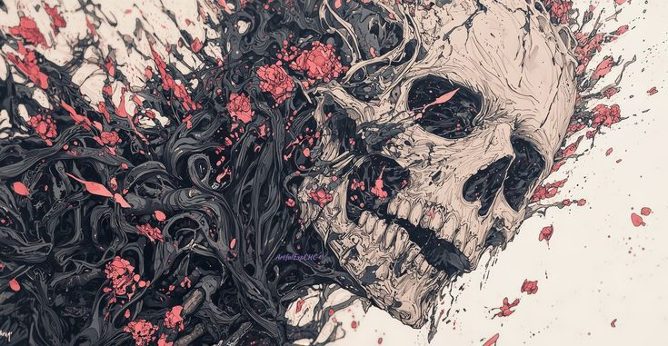

Penjepit Buah Jeruk
Aku memujinya, "Ada tonjolan di balik celana dalam milikmu." Tawanya pecah...
Baca →
Cedera Cendera Mata
"Kuburanmu." Pernyataannya memunculkan seringai di wajah suaminya...
Baca →
Menjamah Bayangannya pada Ruang Visual
"Menurutmu, orang yang bisa langsung tertawa setelah melihat tingkah babi itu..."
Baca →